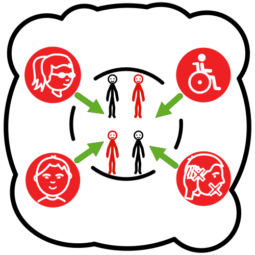
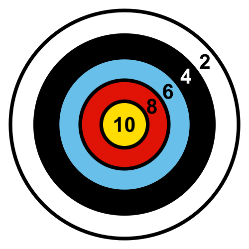

Crea tu REA para el Proyecto REA Andalucía
1. El Proyecto REA Andalucía
Conócelo
¿Cuál es el objetivo del proyecto?
Ofrecer a la comunidad educativa recursos educativos abiertos de calidad que atiendan a la diversidad

¿A qué necesidad da respuesta?
Actualmente el aprendizaje electrónico, la inclusión electrónica y la cultura electrónica tienen un bajo impacto entre la población escolar en Andalucía, aumentando la brecha digital entre la población escolar en esta Comunidad Autónoma.
Por dicha razón, en marzo de 2018 se adjudicó el contrato "Servicios de un entorno virtual de aprendizaje para las enseñanzas no universitarias de la Consejería de Educación y Deporte", mediante el cual se pone a disposición de la comunidad educativa un entorno virtual, para favorecer el proceso de enseñanza-aprendizaje con medios digitales.
Dicho contrato, cofinanciado con fondos europeos, se enmarca dentro de la operación “Emochila en centros educativos públicos andaluces”, incluida en el Programa Operativo FEDER Andalucía 2014/2020, dada de alta mediante Resolución 2016001442/001 de la Dirección General de Fondos Europeos de la Consejería de Economía, Innovación, Ciencia y Empleo.
Un entorno virtual de aprendizaje necesariamente requiere contar con los siguientes pilares: un banco de recursos digitales, un aula virtual y un conjunto de recursos educativos abiertos que se puedan alojar en dicho banco de recursos y consumir desde el aula virtual por parte del alumnado.
Además, la integración de dicho entorno virtual con el Sistema de Información Séneca de la Consejería de Educación y Deporte, será la pieza clave y fundamental para el desarrollo de la Transformación Digital Educativa en el aula, por lo que ambas plataformas se irán integrando con diferentes aplicaciones y herramientas de software educativo con el propósito de, entre otras cosas, hacer más eficiente el sistema educativo andaluz.
¿Cuáles son las metas pedagógicas?

1. Elaborar un conjunto de recursos educativos abiertos que puedan ser alojados en el banco de recursos digitales y consumidos desde las aulas virtuales de enseñanza/aprendizaje de la Consejería de Educación y Deporte, integradas a su vez con el Sistema de Información Séneca.
2. Que dichos recursos ofrezcan un servicio mínimo necesario para la mejora de los procesos de enseñanza-aprendizaje de la comunidad educativa andaluza.
3. Que dichos recursos puedan ser piezas claves y fundamentales en la Transformación Digital Educativa, integrándolas progresivamente con otras aplicaciones y herramientas de software educativo que ayuden a hacer más eficiente el sistema educativo andaluz.
4. Y que sean recursos que favorezcan y hagan posible la atención a la diversidad del alumnado desde su diseño inicial, que aseguren su acceso y favorezcan la participación y el progreso a través de diseños accesibles y universales.
¿Cómo son los recursos a elaborar?
Los recursos serán flexibles y reusables (para hacer posible su modificación), modulares y conformarán un itinerario curricular completo establecido en la normativa vigente en la Comunidad Autónoma de Andalucía para el área/materia de cada curso o etapa educativa que corresponda.
Incluirán una descripción clara de los elementos del currículo que integra, incorporarán guías para su uso por parte del profesorado, utilizarán metodologías activas e incorporarán mecanismos para promover la creatividad e innovación, estimulando el espíritu crítico y la reflexión.
Atenderán a la diversidad del alumnado conteniendo actividades diversas, itinerarios de aprendizaje propios, material complementario, retroalimentación sobre los procesos interactivos, atención multisensorial y ajuste por los distintos escenarios de aprendizaje, cumpliendo con los tres principios del Diseño Universal para el Aprendizaje: proporcionar múltiples formas de compromiso, representación y acción y expresión.
Los recursos estarán abiertos a la realidad próxima del alumnado y a enfoques interdisciplinares con otras áreas y materias, incorporarán actividades que desarrollen estrategias generales o propias del área o materia para que el alumnado aprenda a aprender y que requieran la participación activa, ya sea individual o grupal, fomentando la adquisición de las competencias clave.
¿Cómo se promueve la Educación en Valores?
Los recursos reflejarán y fomentarán el respeto a los principios, valores, libertades, derechos y deberes constitucionales y estatutarios, así como a los principios y valores recogidos en la Ley Orgánica 2/2006, de 3 de mayo, modificada por la Ley Orgánica 8/2013, de 9 de diciembre, para la mejora de la calidad educativa; en la Ley Orgánica 1/2004, de 28 de diciembre; en la Ley Orgánica 3/2007, de 22 de marzo, para la igualdad efectiva de mujeres y hombres, y en las Leyes andaluzas 17/2007, de 10 de diciembre; 12/2007, de 26 de noviembre y 13/2007, de 26 de noviembre.
Cumplirán con las Instrucciones de 14 de junio de 2018, de la Dirección General de Participación y Equidad y de la Dirección General de Ordenación Educativa, sobre los criterios para la selección de libros de texto y para la elaboración de materiales sin prejuicios sexistas o discriminatorios.
Fomentarán actitudes de solidaridad y tolerancia incluyendo contenidos y actividades relacionados con la educación en valores y la cultura andaluza a las que se refieren los artículos 39 y 40, respectivamente, de la Ley 17/2007, de 10 de diciembre, en las enseñanzas que correspondan.
¿Qué requisitos técnicos han de cumplir los recursos?
Los recursos deberán estar catalogados siguiendo los estándares educativos vigentes.
El empaquetamiento de los recursos cumplirá con los estándares que permita su utilización en distintas plataformas educativas.
Cumplirán estrictamente con las normas de accesibilidad y de calidad de los recursos educativos en vigor para el ámbito educativo, entre otras: UNE 71361: LOM-ES. Perfil de aplicación del esquema de metadatos LOM, UNE-ISO 24751: Access for All (AfA). Accesibilidad Universal. Adaptabilidad y accesibilidad, individualizadas en aprendizaje electrónico, educación y formación y UNE 71362: Calidad de los Materiales Educativos Digitales (MED2), UNE 153101:2018 EX sobre Lectura Fácil.
Nunca dependerán de herramientas de creación específicas y podrán ser utilizados directamente en la red.
Los recursos contarán con la autorización expresa de sus autores para la utilización de los textos, imágenes o recursos multimedia que aparezcan en ellos y garantizarán el acceso libre y gratuito a ellos.
Estarán elaborados con la herramienta eXeLearning y utilizarán el estilo EducaAnd de la Consejería de Educación y Deporte.
¿Con qué recursos contamos?
Profesorado
Se nombran 185 docentes para la elaboración de recursos educativos abiertos de las materias troncales de Primaria y Secundaria:
Matemáticas, Lengua y Primera Lengua Extranjera (Inglés) desde 1º de Primaria hasta 4º Educación Secundaria Obligatoria y materias de libre configuración autonómica con contenidos de pensamiento computacional, robótica e investigación aeroespacial aplicada al aula desde 5º de Educación Primaria hasta 2º de Bachillerato.
Oficina Técnica de Apoyo al Proyecto
La Oficina técnica, encargada a la empresa SANDETEL, prestará los servicios de asistencia técnica y consultoría especializada.
¿Con qué materiales contamos?
- Herramientas de coordinación y colaboración:
- Aula Moodle: creación de grupos y sus herramientas de comunicación.
- Trello: herramienta de coordinación de grupos y general del proyecto.
- Herramientas de capacitación docente:
- Módulo 1: “¿Cómo aprendemos?”
- Módulo 2: Diseño Universal para el Aprendizaje.
- Módulo 3: Lectura Fácil.
- Módulo 4: Estrategias de enseñanza específicas para el área/materia.
- Módulo 5: Diseño instruccional de los REA y ejemplo de prototipos.
- Herramientas de edición:
- Instalación y uso de eXeLearning.
- Instalación y uso del estilo EducaAnd para eXelearning.
- Creación de ejercicios H5P.
- Creación con Geogrebra.
- Alojamiento en el banco de recursos andaluz.
- Guía de estilo lingüístico.
- Guía de maquetación y referencias externas.
- Herramientas de calidad de los recursos:
- Conocimiento de la rúbrica basada en la norma UNE 71362 y principios DUA.
- Uso de aplicación de la rúbrica.
- Herramientas externas de elaboración:
- Galerías de imágenes libres.
- Otras (subtítulos, lengua signos, etc).
- Herramientas externas de alojamiento:
- BlogAverroes para el alojamiento de ejercicios H5P.
- Perfil en geogebra.org
- Banco de Recursos de Andalucía para alojamiento de los REA, guías y objetos básicos.
¿Cómo nos organizamos?
Si formas parte del proyecto, tendrás a tu disposición un aula alojada en la plataforma Moodle en la que encuentras, entre otros, recursos para la coordinación como foros generales y específicos, salas de videoconferencia y enlace a tableros para la coordinación de los equipos.
Además, este es el flujo de trabajo que seguirán los equipos.
{kind=link}
¿Quieres saber más sobre el Proyecto REA Andalucía?
Visita la web del Proyecto REA Andalucía para estar al día de todas las novedades.
Obra publicada con Licencia Creative Commons Reconocimiento No comercial Compartir igual 4.0